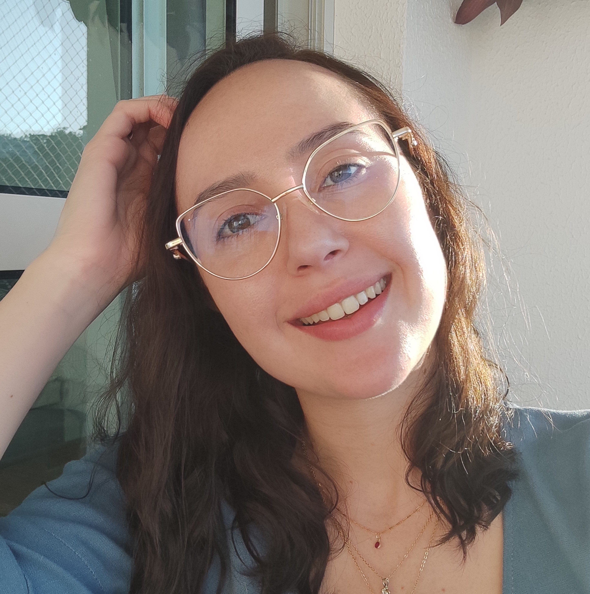

Julia Pereira Marques Dias
Desenvolvedora
Cargo Pretendido
Contato
- +55 47 991022628
- julia.pmarques@gmail.com
- github.com/juliapmarques
- linkedin.com/in/julia-marques/
Skills
-
Git & GitHub
-
OKR
-
Liderança
-
Comunicação
-
Proatividade